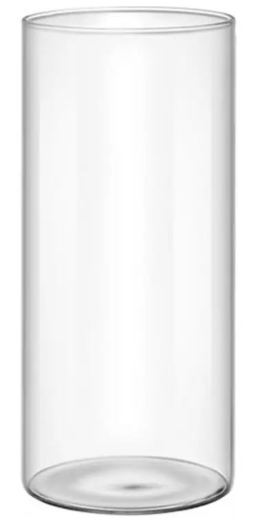

Las suculentas son de las plantas más populares para hacer un terrario, pero casi todos los que empiezan cometen el mismo error: meterlas en un recipiente cerrado con tapa. Una suculenta vive de aire seco, luz fuerte y poca agua. Un terrario cerrado hace justo lo contrario. Aquí tienes cómo montar un terrario con suculentas que sí funcione: abierto, con el sustrato adecuado y un riego espaciado.

Un recipiente abierto deja salir la humedad: es el tipo de terrario que necesitan las suculentas.
1. Por qué las suculentas van en un terrario abierto
Las suculentas guardan agua en sus hojas y en sus tallos, y están adaptadas a zonas secas. En un terrario cerrado, la humedad no tiene por dónde salir: el agua se condensa en las paredes, el sustrato se queda húmedo durante semanas y la base del tallo empieza a pudrirse. Por eso, cuando alguien pregunta si puede tener una suculenta en un terrario, la respuesta es sí, pero solo en uno abierto o sin tapa.
Para más detalles sobre la diferencia entre los dos tipos, mira Cómo cuidar un terrario abierto y Cómo montar tu primer terrario cerrado.
2. Qué recipiente elegir
Cualquier recipiente de cristal sirve, siempre que tenga buena entrada de aire. Busca:
- Boca ancha o sin tapa: el aire circula y la tierra se seca entre riegos.
- Cristal transparente: así ves cuándo hace falta regar y si la planta recibe suficiente luz.
- Una buena capa de drenaje: los recipientes de cristal no llevan agujero, así que el agua sobrante se queda dentro. Pon grava en el fondo y controla el riego con más cuidado que en una maceta.
Un tarro de cristal con boca ancha funciona muy bien. Un jarrón alto también, aunque el sustrato se seca más lento en la base.
3. El sustrato: que drene y no retenga agua
Este es el punto más importante. El sustrato para suculentas debe drenar muy bien. Una mezcla habitual es la de tierra para cactus o suculentas mezclada con arena gruesa o perlita, y una capa de grava o arlita en el fondo. Si quieres hacerlo tú, la mezcla de cómo hacer sustrato sirve de punto de partida, pero para suculentas conviene subir la proporción de material mineral.
Lo que no debes usar es tierra de jardín o turba compacta, porque se encharca y las raíces se asfixian.
4. Luz: la planta que más luz necesita
A diferencia de muchas plantas de terrario, las suculentas necesitan mucha luz. Un sitio junto a una ventana muy luminosa es lo ideal. Si la luz es escasa, la planta se estira, se vuelve pálida y pierde la forma compacta. Cuando ocurra, acércala poco a poco a la ventana en lugar de cambiarla de golpe, para evitar quemaduras.
Ojo con el sol de mediodía en verano: en un cristal puede subir mucho la temperatura y quemar las hojas. Un poco de sombra en las horas más fuertes evita problemas.
5. Cómo y cuándo regar
La regla es sencilla: riega cuando el sustrato esté seco del todo. Mete el dedo unos 3 o 4 centímetros; si notas humedad, espera. En primavera y verano, eso puede suponer un riego cada una o dos semanas. En otoño e invierno, muchas veces basta con regar una vez al mes, o incluso menos si la temperatura de la habitación es baja.
Cuando riegues, hazlo a la base de la planta, sin mojar la roseta de hojas, y no dejes agua acumulada en el fondo del recipiente. Como el cristal no tiene agujero, usa menos agua de la que pondrías en una maceta con drenaje.
6. Qué errores evitar
- Tapar el recipiente: es la causa más frecuente de podredumbre en estas plantas.
- Regar por calendario: regar cada semana sin mirar la tierra acaba con la planta.
- Mezclar suculentas con plantas tropicales: las tropicales piden humedad alta y las suculentas la rechazan. No conviven bien en el mismo recipiente.
- Mojar las hojas: el agua que se queda entre las hojas favorece las manchas y la pudrición.
- Poner la planta en un rincón oscuro: pierde color, se estira y se debilita.
7. Otros cuidados útiles
Retira las hojas secas o blandas en cuanto las veas. Si una hoja se separa con facilidad, puede servir para propagar la planta: déjala secar uno o dos días y colócala sobre sustrato seco hasta que eche raíces. Y si la planta crece mucho, puedes dividirla en nuevas rosetas siguiendo el mismo principio que en cómo dividir una planta, aunque en suculentas el proceso es más simple: se separan los brotes con raíz y se dejan secar antes de plantarlos.
Preguntas rápidas
¿Se puede hacer un terrario con suculentas en casa sin luz natural? No de forma permanente. Necesitan mucha luz; una lámpara LED de cultivo puede ayudar, pero una ventana bien orientada es lo más práctico.
¿Cada cuánto riego un terrario con suculentas? Cuando el sustrato esté seco del todo. En verano suele ser cada una o dos semanas; en invierno, mucho menos.
¿Por qué se ponen blandas las hojas de mi suculenta? Lo más habitual es exceso de agua o falta de drenaje. Revisa la base y el sustrato antes de regar otra vez.
¿Puedo poner musgo con las suculentas? Mejor no. El musgo retiene mucha humedad y favorece la pudrición de las suculentas. Si quieres una cobertura, usa grava o arlita.
¿Qué suculentas son más fáciles para empezar? Las echeverias y los sedums suelen ser buenas opciones por su tamaño compacto y su tolerancia a un riego espaciado.
En resumen
- Usa un recipiente abierto o sin tapa, con buena entrada de aire.
- Sustrato que drene muy bien, con mezcla mineral.
- Mucha luz, evitando el sol fuerte de mediodía en verano, y riego solo cuando la tierra esté completamente seca.
- Nada de musgo ni de plantas tropicales en el mismo recipiente.
Te puede interesar: Cómo cuidar un terrario abierto · Plantas de interior con poca luz · Qué plantas poner en un terrario

¿Prefieres que te lo monte yo?
Hago terrarios cerrados por encargo en la Comunidad de Madrid, desde 25 €.
Ver cómo pedir el tuyo →